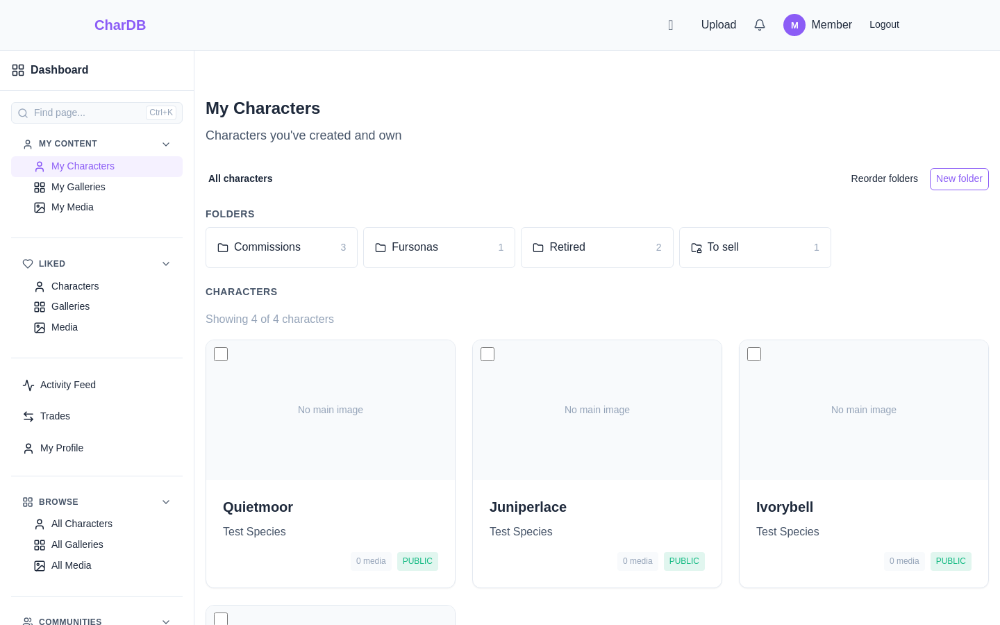
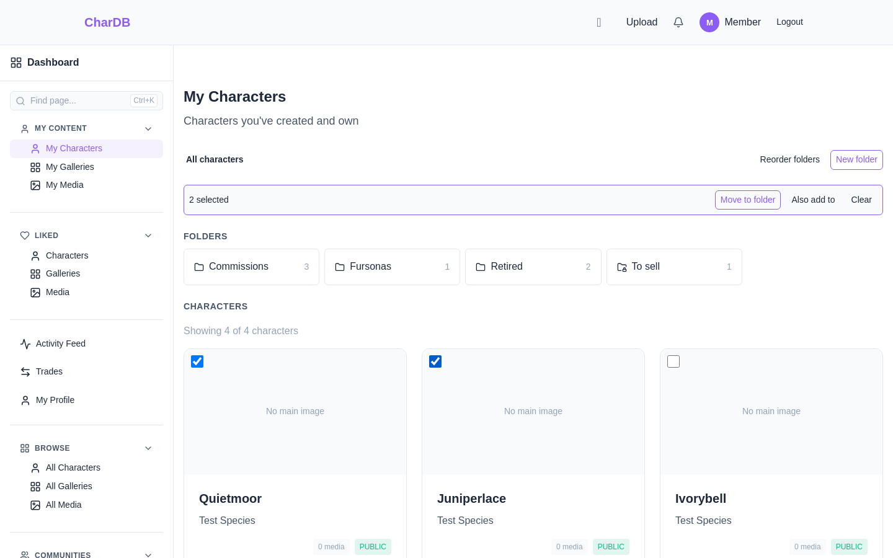
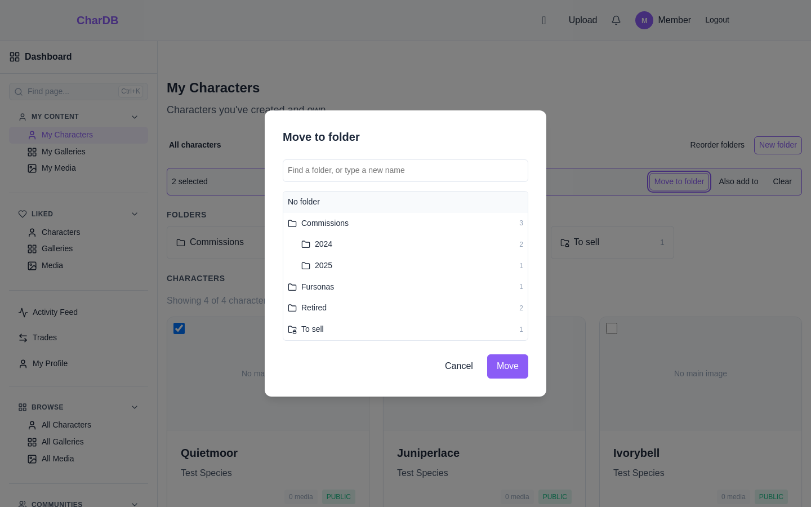
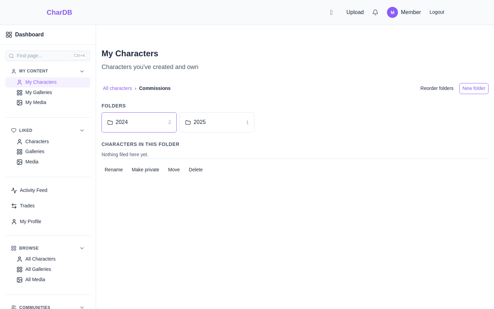
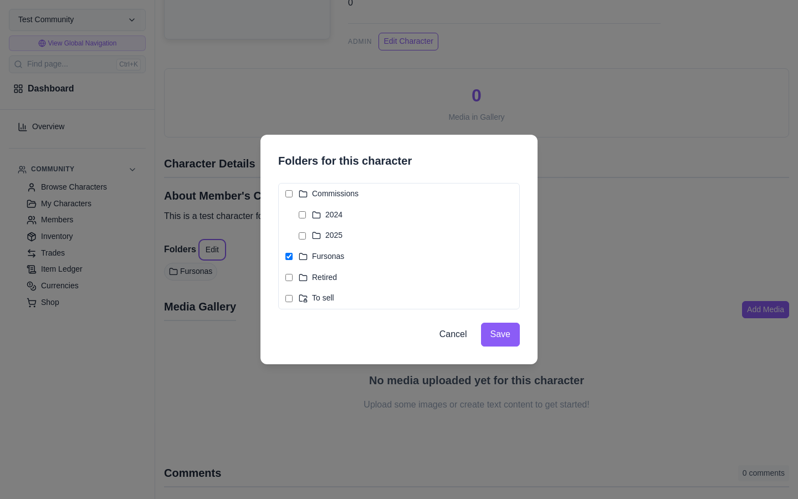
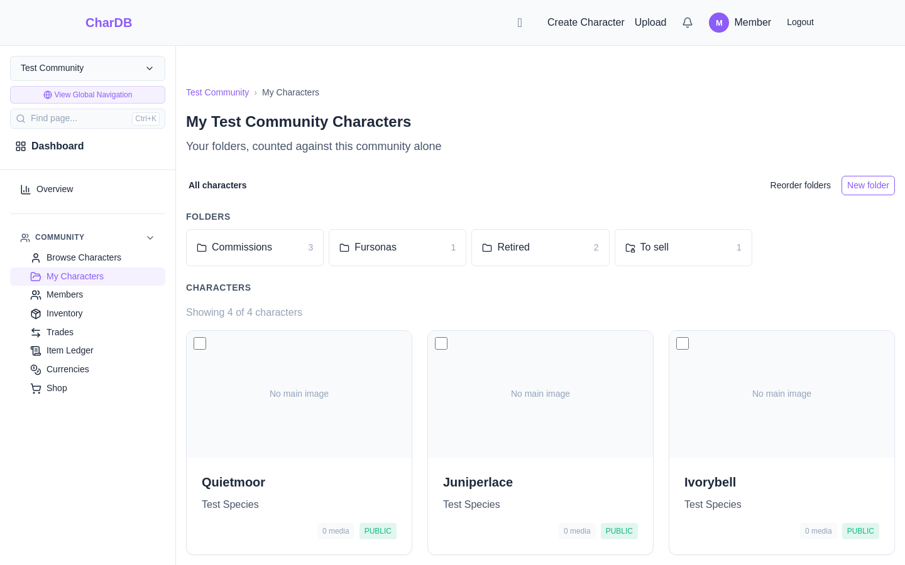

Somewhere to put a hundred characters, and a way for visitors to browse them
My Characters is a file browser. Folders across the top, the characters filed here underneath, and a breadcrumb to get back up. Click a folder to open it.
The top level holds your folders and every character that is in no folder. So if you have never made one, you see your whole collection exactly as you did before — nothing is filed yet. Characters leave the top level as you file them, which makes it a pile that empties.
A character can be in more than one folder. “Fursonas” and “Open for trade” are both true of the same character, and making you pick one would be asking a question with no right answer.
Folders go inside folders, five levels deep
Drag, tick several, or from a character's own page
A private folder is yours alone, and so is everything in it

Drag a card onto a folder. Pick a character up and drop it on a folder tile. The tile lights up while the card is over it. Dragging moves the character: it leaves the folder you are looking at and lands in the one you dropped it on.
Tick several, then move them together. Every card has a checkbox in its top-left corner. Tick a few and a bar appears with Move to folder. This is the one to use when you are clearing a hundred characters rather than filing the one you happened to be looking at. Also add to beside it adds them to a second folder without taking them out of the first.
From the character's own page. Every character has a Folders section, with an Edit button if the character is yours. Tick every folder it should be in and save.


Open a folder and press New folder and the new one is made inside it. You can nest five levels deep, which is further than anyone organising characters tends to go.
A folder shows what is filed directly in it, the way a file browser does. Opening Commissions shows the 2024 and 2025 folders inside it, not the characters filed in those.
The count is the other way round. A folder's number counts everything underneath it, however deep, so a folder whose characters are all one level down still reports them rather than reading as empty. A character filed in two sub-folders of the same parent counts once.
To move a folder somewhere else, open it and use Move. Reorder folders at the top right turns dragging into reordering for as long as it is on; the rest of the time dragging a folder onto another puts it inside. Folders you have never dragged sort alphabetically.

Folders are public by default, and that is the
point of them. Your folders appear on your characters page
(/user/<you>/characters), so somebody arriving at
a hundred characters meets them arranged the way you arranged them
rather than as one wall. A character's page names the folders it is
in, and each one links to that part of your listing.
Make a folder private from inside it and it disappears for everybody else — along with every folder nested under it, whether or not those are private themselves. Nothing filed in a private folder is hidden by it: the characters keep their own visibility, and only the filing is yours alone.
Two things stay yours in any case. Sub-folders you have marked private, and the top-level view of what you have not filed yet — a visitor's top level lists every character you let them see, rather than only the unfiled ones.
wolf means the same thing on every character it is
applied to. A folder says where you put it, belongs only to
you, and is suggested to nobody. Two people can both keep a
“WIP” and neither knows about the other's.

A community's sidebar has My Characters beside Browse Characters. It opens the same workspace with the same folders, counted against that community alone.
Folders belong to you rather than to a community, so one folder can hold characters from several. A folder with nothing in this community still appears, reporting zero — the row keeps the same shape wherever you are, and you can file into a folder from inside a community it is empty in.

Deleting a folder never deletes characters. Whatever was in it goes back to the top level. Folders nested inside it are deleted with it, and their characters come back too.
A character that leaves your hands leaves your folders. However it went — a trade, a direct transfer, a claim — it stops being counted and stops being listed, and it appears in the new owner's top level for them to file as they like.